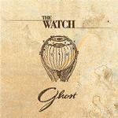

| Artist: | The Watch |
| Title: | Ghost |
| Label: | self produced |
| Length(s): | 48 minutes |
| Year(s) of release: | 2001 |
| Month of review: | [05/2001] |
| 2) | The Ghost And The Teenager | 8.38 |
| 4) | Lochsmith | 1.15 |
| 6) | Riding The Elepant | 3.38 |
| 7) | ...And The Winner Is... | 10.11 |
The Ghost And The Teenager continues in a less bombastic fashion. This time the music is more romantic with lots of piano. Think of The Lamia here, the same feeling of mystery. The rest of the track however also becomes quite playful halfway with quirky keyboards and then some bouncy parts. Weird is that a man says in a dark voice what the song is called and what the band is. I wonder whether this is only on the review copy I got. The mellotrons go full force around the six-minute mark, and give that impression of "going against all odds". I hoped they would continue to build on this, but soon they move to a sharp meandering guitar work. Againa some magnificent parts, but the song as a whole leaves me with a feeling it could have been better structured/composed.
Heroes is the next one up. Like the previous track the song has some forceful bombastic parts, but also quite a bit of quirkiness. The intimate vocals of Rossetti in the middle remind me a bit of Alan Reed's (like in Pallas' Blood And Roses). Wonderful, emotionally laden vocal melodies. The final grand moments in this track (the guitar and mellotron part at 7.30) remind me of how emotional this kind of music can be like.
Yep, there's that guy again saying that this is Lochsmith from the new album of The Watch (more rightfully, he would call it the debut). This is only a short intermezzo, seemingly put between two halves of an album. Moving Red is a song that is rather up-beat, but opens a bit in the style of Firth Of Fifth and first has some flowing rhythms and soft sad vocals. It contains some fairly abrasive vocal parts and Banksian keyboards as well.
Riding The Elephant opens with clear keyboards. It is a rather short track, a bit sad sounding with somewhat industrial sounding percussion. The final track is also the longest. For the first time, I notice an acoustic guitar, something which Genesis does quite often. Softly the track gets underway. Quite abruptly we move into a strongly driving part, the rapids. The pace goes down fairly rapidly and in the part that follow we find some dissonant keyboards reminding me a bit of Spocks Beard. Halfway I hear some Apocalypse In 9/8 coming by. The pace goes out of the track a bit after that, but the guitar makes up or it.